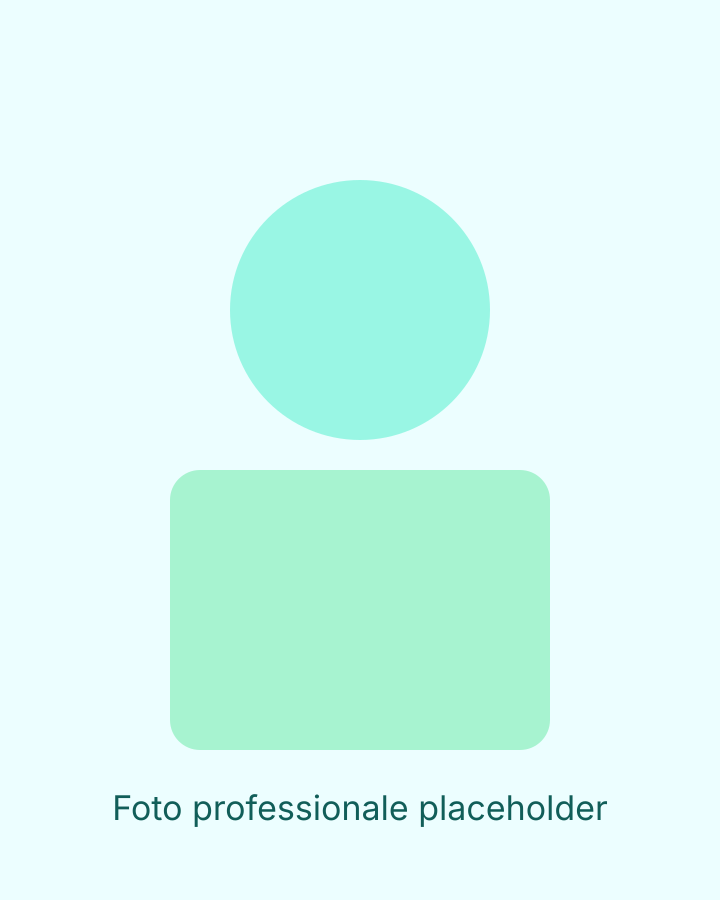

Analisi aziendale
Mappa dello stato attuale, criticità e leve di miglioramento con priorità operative chiare.
Consulenza freelance • 100% remoto
Supporto PMI, startup e ditte individuali su analisi aziendale, controllo finanziario, servizi amministrativi e automazione dei processi.

Interventi su misura, con un obiettivo comune: migliorare performance economica, controllo e sostenibilità finanziaria.
Mappa dello stato attuale, criticità e leve di miglioramento con priorità operative chiare.
Implementazione KPI, budget e reporting periodico per trasformare i numeri in decisioni.
Pianificazione di cassa, monitoraggio debiti/crediti e supporto alla stabilità finanziaria.
Strutturazione dei flussi amministrativi per aumentare affidabilità e velocità esecutiva.
Riduzione attività manuali e colli di bottiglia con processi più semplici e scalabili.
Percorso iniziale a costo fisso per allineare obiettivi, priorità e metriche con i referenti aziendali.
Implementato sistema di controllo costi e revisione del menu engineering con lo Chef, budget di spesa aggiornati giornalmente in base al revenue, benchmark fornitori e rinegoziazione acquisti.
Risultato: food cost dal 33% al 21% in 3 mesi.
Ruolo CFO ad interim in collaborazione col CEO: strumenti di controllo gestionale e finanziario, razionalizzazione rami in perdita e focalizzazione risorse sul core business.
Risultato: ritorno a risultati economici positivi e rientro dai debiti in 4 mesi.
“Placeholder testimonianza cliente #1”
“Placeholder testimonianza cliente #2”
“Placeholder testimonianza cliente #3”
Sono un consulente freelance specializzato in amministrazione e controllo di gestione, con 13 anni di esperienza specifica.
[Placeholder nome professionista]
Lavoro da remoto con PMI, startup e ditte individuali per migliorare processi,
visibilità sui numeri e qualità delle decisioni.
Vuoi capire se posso essere utile al tuo business? Prenota una call conoscitiva gratuita.
Email: yoursidekick.consulting@gmail.com (placeholder)
Telefono/WhatsApp: [placeholder]
Operatività: Solo da remoto
Prenota call conoscitiva gratuita